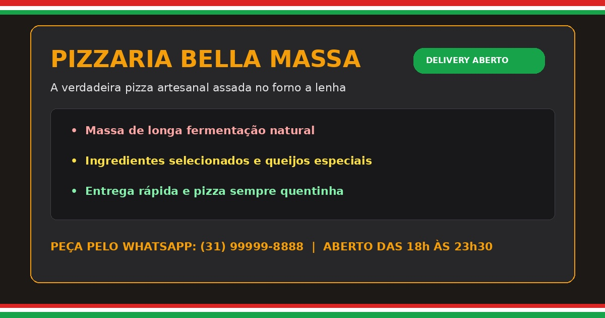

Bem-vindo à Bella Massa
Tradição e sabor se encontram aqui. Nossa massa artesanal é preparada com fermentação natural de 48 horas, garantindo sabor único e textura inconfundível para os verdadeiros apaixonados por pizza.
A melhor pizza da região!

Tradição e sabor se encontram aqui. Nossa massa artesanal é preparada com fermentação natural de 48 horas, garantindo sabor único e textura inconfundível para os verdadeiros apaixonados por pizza.